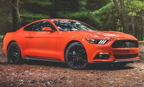
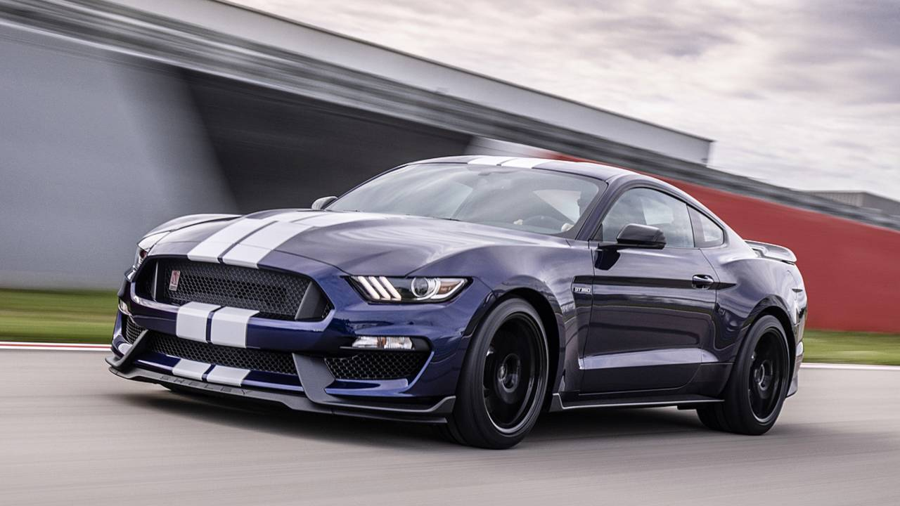

The seventh-generation Ford Mustang particularly the S650, introduced for the 2024 model year represents the most technologically ambitious chapter in the nameplate's sixty-year history, proving that raw American muscle and cutting-edge digital sophistication are no longer mutually exclusive. Step inside and the transformation is immediately apparent: traditional analog gauges have given way to a sweeping curved digital cockpit, its dual displays rendering performance data with cinematic clarity, powered by the same Unreal Engine technology found in modern video game development. Drive modes don't merely adjust throttle maps they reshape the entire visual personality of the instrument cluster, so that the cabin itself feels different when you're carving a canyon road versus sitting in traffic.
Beneath the skin, the engineering is equally forward-thinking. MagneRide 4.0 adaptive damping reads road conditions thousands of times per second, continuously adjusting suspension stiffness to maintain composure whether the road turns rough or the driver turns ambitious. For those who prefer their ambition sideways, Ford introduced a dedicated electronic drift brake a first for the Mustang giving track-day drivers precise, repeatable control during sustained slides without the mechanical limitations of a traditional handbrake. The active valve performance exhaust adds another dimension of customization, allowing drivers to dial the soundtrack of their engine from a refined morning rumble to a full-throated declaration of intent.
Technology extends beyond performance, too. Ford's Co-Pilot360 suite brings adaptive cruise control, blind-spot monitoring, and lane-keeping assist to a car that once offered little more than a lap belt and an eight-track slot. Perhaps most significantly, the S650 supports over-the-air software updates meaning the Mustang you buy today can genuinely improve over time, receiving new features and refinements long after it leaves the showroom floor. It is, in every sense, a living machine: one that honors sixty years of heritage while looking, unapologetically, toward what comes next.
Specs

Dark Horse
- 500 hp
- 5.0L Coyote V8 (forged internals)
- 0–60 in ~3.9s
- 418 lb-ft torque
- 6-speed Tremec manual

Ecoboost
- 315 hp
- 2.3L turbocharged 4-cylinder
- 0–60 in ~5.1s
- 350 lb-ft torque
- 10-speed automatic

Shelby
- 760 hp
- 5.2L supercharged V8
- 0–60 in ~3.3s
- 625 lb-ft torque
- 7-speed dual-clutch automatic

Mustang GT
- 486 hp
- 5.0L Coyote V8
- 0–60 in ~4.1s
- 418 lb-ft torque
- 6-speed manual / 10-speed automatic